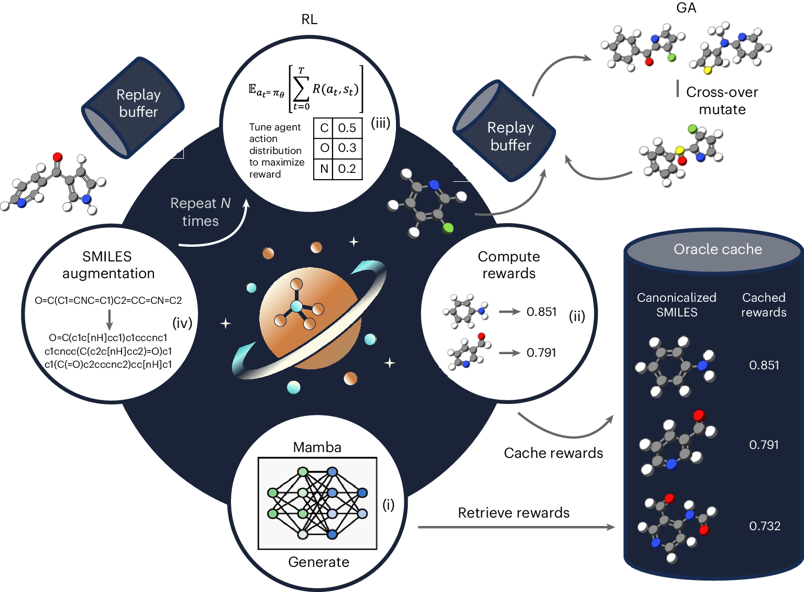
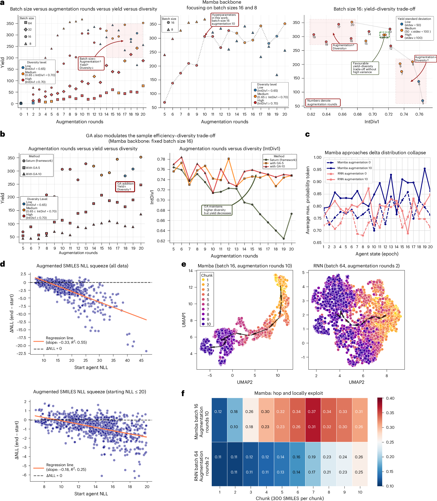
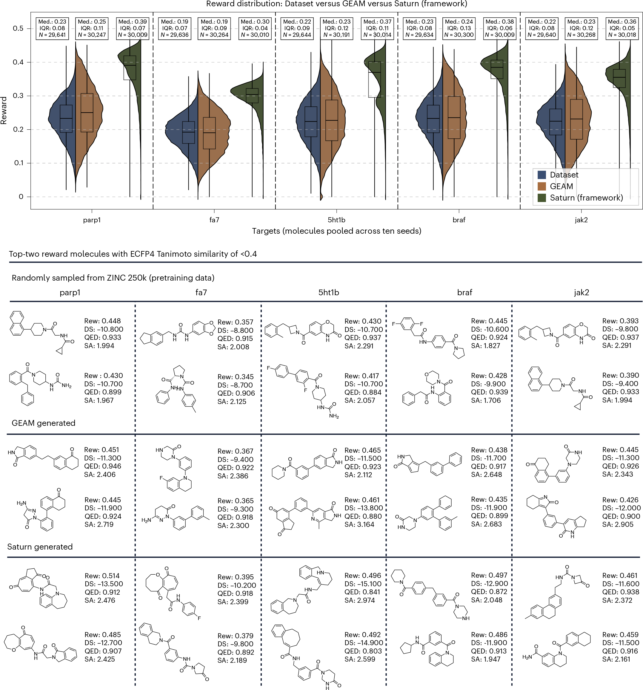
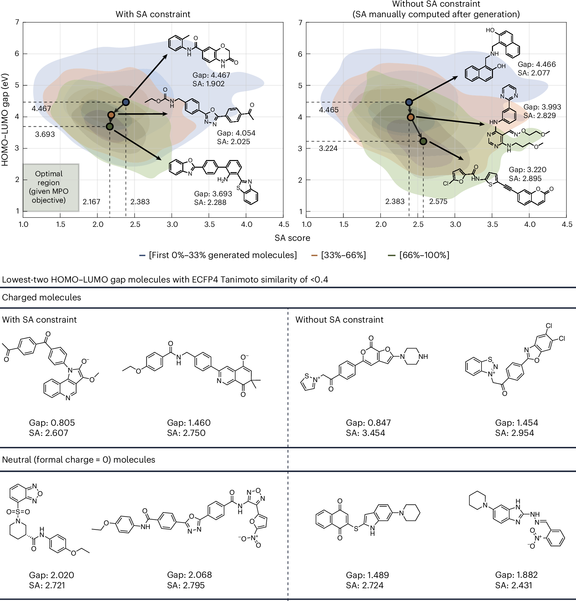

全文精读
记忆操控下的高样本效率生成式分子设计
Sample-efficient generative molecular design using memory manipulation
解读更新 2026-10-18 08:27 · 依据论文全文整理
全文精读已完成，文章版正在逐步升级。现有内容可继续阅读。
本文提出 Saturn，将 Mamba 语言模型与强化学习、经验回放及 SMILES 增强结合，用于预算受限的生成式分子优化。作者分析了样本效率与分子多样性的权衡，并在蛋白靶点多参数优化及 DFT 电子性质优化中进行评估。结果显示，Saturn 在若干优化指标上表现突出，但局部利用可能牺牲多样性，且其对更高精度结合亲和力评估及分子可合成性的适用性仍有待验证。
研究问题
论文关注生成式分子设计中的样本效率问题：高保真 oracle 计算昂贵，通常只能先用较便宜的代理评估筛选候选。作者进一步考察如何在有限 oracle 预算下直接优化目标，并分析生成质量、评估成本与分子多样性之间的关系；本文没有直接研究运维或结构可靠性问题。
方法与路线
Saturn 以 Mamba 作为 SMILES 自回归生成骨干，结合强化学习、经验回放和 SMILES 随机化增强；回放缓冲区保存高奖励分子，并可选用遗传算法。评估包括 toy MPO、五个蛋白靶点的 docking 目标，以及 DFT 计算的 HOMO–LUMO gap 优化；各实验预算和种子数依任务而异。
创新与比较
作者的主要贡献是提出 Saturn 框架，并解释 Augmented Memory 的作用机制：增强回放分子的不同 SMILES 表达会提高相应生成可能性。论文还将 Mamba 的生成行为概括为“hop and locally exploit”，并系统讨论批量大小、增强轮数与多样性之间的关联；这些是作者在本文实验范围内提出的解释。
证据与发现
作者报告增加增强轮数通常可提高样本效率，但可能降低多样性；加入遗传算法有助于维持多样性，产率提升则较有限。Saturn 在若干 docking 与严格筛选指标上表现较好，并在 DFT 案例中将 HOMO–LUMO gap 分布推向较低值。扩展表格提供了架构效率和 novel hit ratio 的比较证据。
局限与边界
作者指出，本文尚未将 Saturn 验证于准确度更高的结合亲和力 oracle，且仅用合成可及性分数不足以充分判断分子是否可合成。局部利用也未必适用于所有目标；面对活性悬崖时，相似分子可能具有显著不同的性质。资料未报告原文件缺项，故此处没有可确认的缺页或缺公式需要补列。
方向关联
本文与智能运维、结构设计和可靠性研究没有直接实验联系。其有限预算下结合回放、代理或高保真评估以及探索—利用权衡的思路，可能为其他昂贵目标优化提供方法参考；但迁移到工程领域的有效性不能由本文结果直接推出，仍需针对任务验证。
后续研究建议
可在新的工程优化问题中，将昂贵仿真设为高保真评估器，比较回放与探索策略对预算利用和解集多样性的影响；尤其应设计能识别目标突变或局部失效的评估，并报告重复实验及不确定性。此为研究设想，不是作者已完成或验证的工作。
阅读建议
推荐关注生成式分子设计、强化学习或高成本模拟优化的读者阅读：论文不仅提出 Saturn，还结合基准比较、DFT 案例和效率—多样性分析讨论其效果与适用边界。
原图未改动。以下图注来自标注的来源，不据此补写摘要未报告的实验结论。
已取得的论文原图




原文图注与出处
a , How batch size and augmentation rounds affect the yield and IntDiv1 (diversity). Generally, decreasing the batch size and increasing the augmentation rounds improve the yield at the expense of diversity. stdev, standard deviation. b , Fixing the batch size to 16, activating the GA maintains diversity but yield improves to a much lesser degree with increasing augmentation rounds. c , Average maximum token probability across RL epochs. Augmentation pushes the agent action distribution towards a delta distribution (putting most of the probability mass on specific tokens). d , Top: after running Augmented Memory, augmented forms of the buffer SMILES become more likely to be generated. The regression line measures the ΔNLL shift as the starting NLL varies and conveys that the larger the starting NLL (less likely), the larger the likelihood increase. Bottom: focusing on the SMILES forms that have a starting NLL ≤ 20, this relationship is lessened but the observation holds. The coefficient of determination ( R 2 ) is annotated in both subplots. e , 3,000 oracle budget test experiments chunked into 300 SMILES. Uniform manifold approximation and projection embedding of the agent chemical space traversal (arrows are the centroid of each chunk). Mamba exhibits a directional traversal as RNN (baseline Augmented Memory) continues to sample globally. f , Mamba exhibits a ‘hop and locally exploit’ behaviour in which the intrachunk Tanimoto similarity (top values) are higher than RNN. The bottom value is the interchunk similarity. Source data
Guo, Jeff et al.
原文图页 · CC BY 4.0

原文图注与出处
The molecules are pooled across ten seeds (0–9 inclusive) and molecules that failed to dock were removed. The box-plot whiskers cover the full data range. The middle line is the median (Med.), and the upper and lower lines denote the interquartile range (IQR). The top-two (by reward (Rew)) molecules from each pooled set are shown. QED, quantitative estimate of drug-likeness; SA, synthetic accessibility score; DS, 2 docking score. Note that the pairs of molecules N are also dissimilar by an ECFP4 Tanimoto similarity of <0.4. Source data
Guo, Jeff et al.
原文图页 · CC BY 4.0

原文图注与出处
The optimization objectives are to minimize the HOMO–LUMO gap alone (right plot) or jointly minimizing it with the SA score (left). Molecules are pooled across three seeds (0–2 inclusive) and the contour densities show the shift to lower HOMO–LUMO energies from the first 33% generated molecules to the next 33%, and the final 33%. The dots and annotated molecules are the median HOMO–LUMO value at each fraction. The median HOMO–LUMO energy and SA score between the first and last fractions are also annotated. Removing the SA score constraint results in lower HOMO–LUMO values, as expected. The two lowest HOMO–LUMO gap molecules from each pooled set are shown. Note that the pairs of molecules are also dissimilar by an ECFP4 Tanimoto similarity of <0.4. Source data
Guo, Jeff et al.
原文图页 · CC BY 4.0查看公开摘要
Generative molecular design for drug discovery has recently achieved a wave of experimental validation. Language models operating on string-based representations of molecules are amongst the most successful architectures. The most important factor for downstream success is whether an in silico oracle (computational predictor of a molecule property) is well correlated with the desired end point (such as binding affinity). To this end, current methods use cheaper proxy oracles with a higher throughput before evaluating the most promising subset with high-fidelity oracles. The ability to directly generate molecules with optimal properties as predicted by high-fidelity oracles (computationally expensive simulations with greater predictive accuracy) could greatly enhance generative design and improve hit rates. However, current models are not efficient enough to consider such a prospect, exemplifying the sample efficiency problem. Recently, the Mamba architecture has been proposed as an alternative to transformers, which are widely used in large language models. Existing works have validated Mamba’s performance on tasks spanning natural language completion to biology foundation models. In this work, we introduce a framework called Saturn, which demonstrates the application of the Mamba architecture for generative molecular design. Here we elucidate how experience replay with data augmentation improves the sample efficiency and how Mamba intensifies the effect of this mechanism. Next, we show that Mamba with experience replay outperforms 16 models on multiparameter optimization tasks relevant to drug discovery and possesses sufficient sample efficiency to directly optimize density functional theory simulations as a high-fidelity oracle.